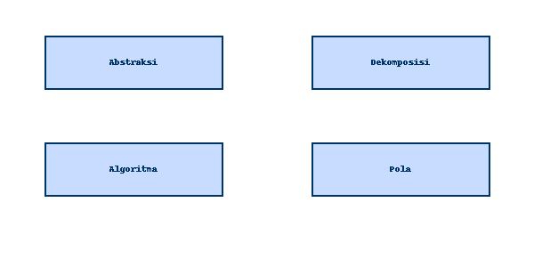

💡 Berpikir Komputasional
Eksplorasi Interaktif Informatika SMA Kelas X
ğŸ Home
📚 Konsep Dasar Berpikir Komputasional
🯠Abstraksi
🧩 Dekomposisi
🧮 Algoritma
📈 Pengenalan Pola
🔠Topik Interaktif
🔠Searching (Pencarian)
🔢 Sorting (Pengurutan)
📚 Stack & Queue
🧠Diagram Pilar BK (Pop-up)

×
🧪 Latihan & Simulasi
📠Latihan Soal Interaktif
🮠Simulasi Lanjutan